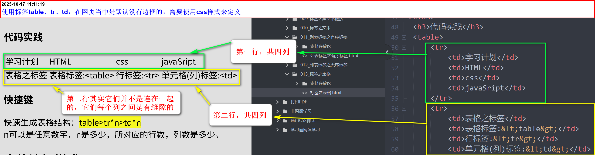
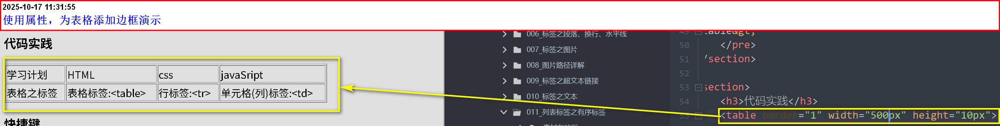
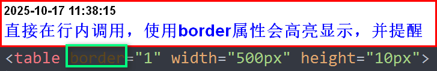
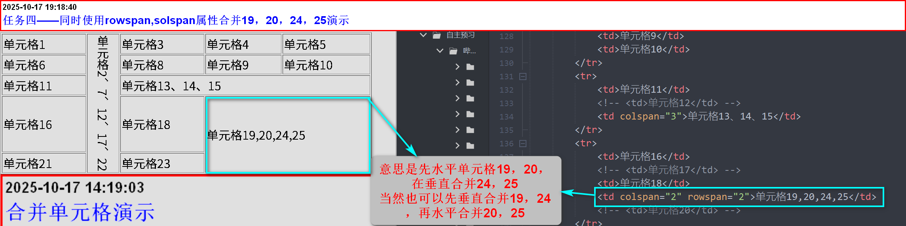

特点：
表格在数据展示方面非常简单，并且表现优秀
表格组成与特点
由：行、列、单元格组成
单元格的特点：同行等高，同列等宽
表格标签
表格：<table>
行：<tr>
单元格(列)：<td>
代码演示
<table> <tr> <td>单元格</td> <td>单元格</td> <td>单元格</td> <td>单元格</td> </tr> </table>
代码实践
| 学习计划 | HTML | css | javaSript |
| 表格之标签 | 表格标签:<table> | 行标签:<tr> | 单元格(列)标签:<td> |
快捷键
快速生成表格结构：table>tr*n>td*n{}
n可以是任意数字，n是多少，所对应的行数，列数是多少。
{}内输入的文本内容是，所建立的单元格的内容，也就是列的内容，后续可以编辑更改(注意编辑文本内容HBuilderX没有效果)。
表格边框样式
虽然使用了table、tr、td标签建立了表格，但是在网页显示的时候是默认没有边框的
如：

表格属性
border：设置表格的边框width:设置表格的宽度
height:设置表格的高度  当然正常情况下，不建议直接使用属性来添加边框，并且在使用行内标签的时候， 还会高亮显示，这是开发环境告诉我们，这么做是不建议的。 
单元格合并
以上使用标签table、tr、td以及属性border、width、height在网页上成功的创建表格以及边框
•但是有没有发现，在网页上的每个表格都是独立的，不在一起。
•这样我们需要使用合并单元格
任务：
1.先建立一个行为5,列为5的表格，并给每个单元格添加编号
2.将13~15合并为一个单元格：使用colspan属性
3.将2~22合并为一个单元格：使用rowspan属性
4.同时使用rowspan,colspan属性合并19，20，24，25。
注意：
1.以要合并第一个单元格添加对应的属性(colspan、rowspan)
2.使用属性时，要算好合并单元格的数量，并将对应的单元格注释或直接删掉。
3.水平合并(solspan)：保留左边，删除右边。
4.垂直合并(rowspan)：保留上边，删除下边。
| 单元格1 | 单元格2、7、12、17、22 | 单元格3 | 单元格4 | 单元格5 |
| 单元格6 | 单元格8 | 单元格9 | 单元格10 | |
| 单元格11 | 单元格13、14、15 | |||
| 单元格16 | 单元格18 | 单元格19,20,24,25 | ||
| 单元格21 | 单元格23 | |||
任务四——同时使用rowspan,solspan属性合并19，20，24，25演示
在 HTML 中，<table>、<tr>、<td> 等元素默认是有 边框间距（border-spacing） 和 边框合并（border-collapse） 的行为的。即使你给
每个单元格的边框是 独立绘制 的，看起来就像中间有缝隙。
这就需要在table标签定义css样式：border-collapse:collspase;
效果：设置 border-collapse: collapse; 后，所有单元格的边框会 合并成一条线，看起来就是一个 完整的表格，没有缝隙。